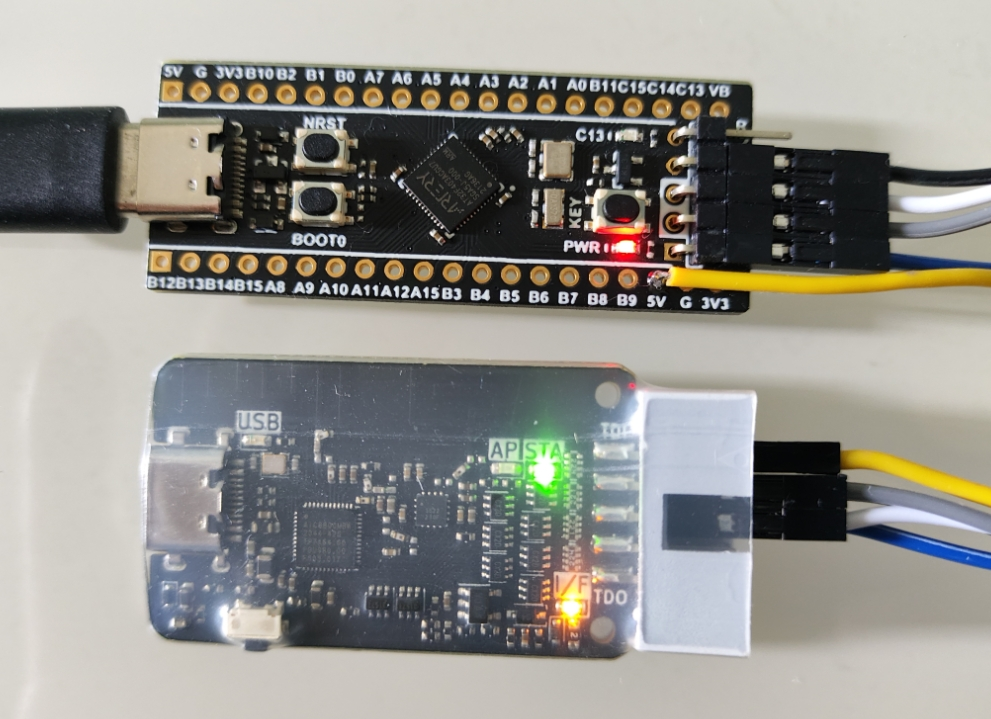

无线ICP（在电路编程）
版权声明：转载需注明来自于 vllogic.com
引言
在工业现场维护工作中，可能出现固件更新需求，如果没有在开发阶段准备
IAP/OTA接口，就只能通过芯片厂预留的ICP/ISP接口进行更新。考虑到工业现场常常空间受限，环境不佳，通过
Vllink系列无线调试器可降低维护工作强度，在预留接口的情况下，仅需接上远端调试器即可完成目标板与计算机的连接。本文将以
AT32F403AxG为例，阐述无线ICP过程。
硬件连接
推荐使用
3.7V-5.2V为远端调试器供电若仅有
3.3V，其来源务必为DCDC或输出能力大于500mA的大电流大封装LDO，且5V及GND需用高质量连接线目标板接线 
如上图所示，进行了如下连接： 远端 --- AT32F403A 5V --- 5V GND --- GND TMS --- SWDIO TCK --- SWCLK VRef --- 3V3
计算机端，将另一个黑尾调试器通过USB接上即可
编程软件准备
通过搜索发现雅特力提供了定制OpenOCD
但其最新Actions中的Artifacts已无法下载
这种情况可以通过Fork，手动触发一次构建
本人Fork后构建的二进制 xpack.zip
无线ICP过程
下载上文中的二进制包，解压后，进入
xpack\bin-windows_amd64目录本人无AT32F403A工程，故通过HxD工具生成了一份128KB的随机数据Bin文件测试
将测试文件
test128k.bin拷贝至xpack\bin-windows_amd64目录目录下，Shift + 鼠标右键，打开PowerShell
执行命令：
./openocd -f interface/cmsis-dap.cfg -s ../scripts -f target/at32f403xG.cfg -c "transport select swd; program test128k.bin verify exit 0x08000000"
输出如下：
Open On-Chip Debugger 0.11.0+dev-g03c994a-dirty (2024-05-09-02:56) Licensed under GNU GPL v2 For bug reports, read http://openocd.org/doc/doxygen/bugs.html Info : auto-selecting first available session transport "swd". To override use 'transport select <transport>'. Info : flash reg address: 0x0, usd addr: 0x0 Info : flash reg address: 0x0, usd addr: 0x0 Info : DEPRECATED target event trace-config; use TPIU events {pre,post}-{enable,disable} Warn : Transport "swd" was already selected Info : Using CMSIS-DAPv2 interface with VID:PID=0x1209:0x6666, serial=Vllink.Basic2.5DEA1FD276 Info : CMSIS-DAP: SWD supported Info : CMSIS-DAP: JTAG supported Info : CMSIS-DAP: SWO-UART supported Info : CMSIS-DAP: Atomic commands supported Info : CMSIS-DAP: Test domain timer supported Info : CMSIS-DAP: FW Version = 0254 Info : CMSIS-DAP: Serial# = Vllink.Basic2.B2B0A8AF76 Info : CMSIS-DAP: Interface Initialised (SWD) Info : SWCLK/TCK = 0 SWDIO/TMS = 0 TDI = 0 TDO = 0 nTRST = 1 nRESET = 1 Info : CMSIS-DAP: Interface ready Info : clock speed 5000 kHz Info : SWD DPIDR 0x2ba01477 Info : [at32f403xx.cpu] Cortex-M4 r0p1 processor detected Info : [at32f403xx.cpu] target has 6 breakpoints, 4 watchpoints Info : starting gdb server for at32f403xx.cpu on 3333 Info : Listening on port 3333 for gdb connections target halted due to debug-request, current mode: Thread xPSR: 0x01000000 pc: 0xf6440d32 msp: 0xabefe7b0 ** Programming Started ** Info : This is target at32f403axx algorithm Info : main flash size: 0x100000, sector num: 0x100, sector size: 0x800, bank size: 0x80000 Info : This is target at32f403axx algorithm Info : main flash size: 0x100000, sector num: 0x100, sector size: 0x800, bank size: 0x80000 Info : This is target at32f403axx algorithm Info : main flash size: 0x100000, sector num: 0x100, sector size: 0x800, bank size: 0x80000 Info : Earse first sector = 0x0, last sector = 0x3f Info : Write address = 0x8000000, count: 0x20000 ** Programming Finished ** ** Verify Started ** ** Verified OK ** shutdown command invoked
擦除、写入、校验耗时12.7秒，观察到
Verified OK，ICP更新成功OpenOCD更多信息可参看OpenOCD User’s Guide及Flash-Commands.html#program。
补充
对于批量ICP操作，可通过脚本周期性探测目标芯片，在探测成功后执行ICP命令，实现自动化
此方案亦可用于现场调试，配合任何支持
CMSIS-DAP V1/V2协议的调试软件